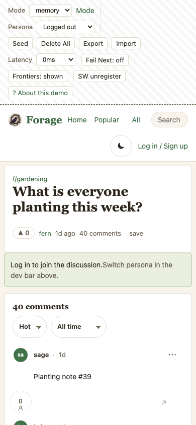
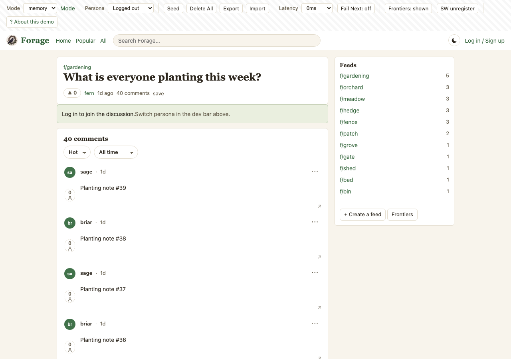

Garlic went in yesterday; the frost warning has me second-guessing the last of the brassicas.
Six proposals (A–F) and ten open decisions, made to be talked through — not code. The purpose:
make a Forage thread read the way the Reddit and Bluesky screenshots in ~/Downloads/new/Photos-1-001 read —
who said what, what answers what, what is a repost — with fewer things to tap by accident on a phone. A is the header
line, B the ⋯ menu, C the threading, D the like control, E the sort control, F deep links to comments. Every proposal shows Forage today beside
the proposal; the “today” frames in C are also captured pixels, not drawings (see snaps/).
| # | Decision | Proposal | Alternative |
|---|---|---|---|
| 1 | Vote leaves the left column | Yes — into the action row as a pill; the column becomes the avatar | Keep the rail; put the avatar in the byline only (no left column at all) |
| 2 | Collapse control | ⊖/⊕ on the actions row, children only | Keep the gutter but draw it only from depth 1, and shrink the hit area |
| 3 | Menu contents | Post · thread · account as in B, separators only; steward group conditional; Delete replaces Report on your own post; Save via Bluesky bookmarks | Fewer: Copy link · Save · Hide · Report |
| 4 | Menu on phone | Bottom sheet (Reddit); popover on desktop (Bluesky) | Popover everywhere |
| 5 | Quote on phone | Wall on the node’s outer edge (left of the avatar), no tint, avatar header like a comment | Keep the tinted block everywhere |
| 6 | Haptics | On by default, one settings switch, like + promote only | Off by default |
| 7 | Time format | Bare “1d” / “5h” next to the name (Reddit/Bluesky) | Keep “1d ago” |
| 8 | Avatars are real (owner, 2026-08-29) | Every avatar in A and C is the account's actual picture; the masthead's initials stand-in (deliberate, js/main.js E144: “their little avatar or like a stand-in”) is retired for the fetched one, with the initials only as the not-yet-loaded state | Keep the stand-in in the masthead; real avatars only on posts and comments |
| 10 | Deep links to comments (F) | Every comment has a permalink; Share copies it; opening one lands on the thread with that comment highlighted and its parents above it (Reddit's shape); a reply's own at:// uri resolves too | Open the reply as the root of its own page with the parent shown above (bsky.app's shape) |
| 9 | Sort: one control bar, not tabs — and what Best means (E) | Adapt the lens board toolbar (selects) into one bar used on boards AND threads; every sort on every board, timeframe on Top; Best redefined, since without downvotes it orders exactly as Top today | Keep Best/Top/New tabs on threads; sort bar on boards only |
| v | What changed | Commit |
|---|---|---|
| 11 | A subtle pill outline around count + arrow: one unit, one touch target | this |
| 10 | Count tucked closer to the arrow; the two are one unit — the rail enters above the count and leaves below the arrow | 74a6464 |
| 9 | The rail runs behind the count and the arrow and out the other side — one continuous line from avatar to children | 8288fe5 |
| 8 | Comment like: count above the arrow, and the arrow sits on the action row’s line, level with Reply and ⟳ | 678abab |
| 7 | Comment like moves under the avatar (arrow over count); “open its thread ↳” dropped from quotes — the ⋯ already opens it on bsky.app | 84be286 |
| 6 | Repost on quotes is icon-only; a small share at the bottom-right of every comment; F — deep links to comments (decision 10) | 93fe28b |
| 5 | Versioned (MOCKS.md); blurb + decisions on top; captured phone/desktop snaps of today; real avatars (8) and the sort bar (E, 9) added | df40aeb |
| 4 | ⋯ top-right on every comment and quote, with its menu; quotes get like · Reply · Repost | 9eb0074 |
| 3 | Connector anchored to avatars; quote wall outside the avatar; Reply gets a return arrow | a2ca71f |
| 2 | Current beside Proposed (toggle dropped); share pill right-aligned; Save rides Bluesky bookmarks | 0339b28 |
| 1 | First draft: A–D | 927b44b |
Buttons are live: ⋯ opens the menu, ▲ toggles a like (and buzzes on Android), ⊖ folds a comment. Current and Proposed render side by side in C.
Every post and every comment opens the same way: a 32px avatar, the author, a dot, how long ago. On a feed row
the board (f/gardening) leads the line instead, because that is what you scan a mixed feed by. The ⋯ sits
top-right on the feed row and on the read view, so it is one gesture in both places. Vote moves off the left rail
and into the action row (Proposal D), which is what frees the left column for the avatar. The lettered circles here
stand in for the account's real picture — the lens already carries avatar on profiles and feeds; posts and
comments would render the same URL, and the masthead's initials stand-in becomes the loading state only (decision 8).
Current
Proposed
Bluesky's shape: one flat list, label left, icon right, destructive last. The thin separators are the only grouping — three groups (post · thread · account), no headings and no submenus. Open it above: a popover under the ⋯ on desktop, a bottom sheet on the phone (Reddit's “Options” sheet, with Bluesky's rows). What goes in it is the decision; the list here is a starting proposal.
/p?uri= form (3v already builds it for board rows).app.bsky.bookmark.createBookmark / deleteBookmark / getBookmarks, which are private, server-side XRPC with no record (docs/LEXICON-REGISTER.md § bookmarks). One intent, one outcome: a save here is the same save as on bsky.app and stays as private as theirs. The public community.lexicon.bookmarks.bookmark record is the one to avoid for exactly that reason. Memory mode keeps the local store. Verify the three procedures against the live lexicon before building — the register names them, no code calls them yet.prompt(); it wants a sheet of its own.Not in the menu: Translate (Bluesky has it; we have no translator) and Award (Reddit's). Like, reply and repost stay in the action row because they are the things you do to most posts; the menu is for the things you do to few.
Today every comment carries the collapse gutter — a direct reply to the post looks “nested” under nothing, and on a phone the whole left edge is a hit target (the second row below is today, drawn with the same content). Reddit's model reads correctly: a top-level comment sits flush; a connector is drawn only from a comment to its own replies, elbowing into each child's avatar. The connector is paint, not a button. Collapse is a single ⊖ on the actions row; the count of hidden replies lives on the ⊕ that replaces it. A repost-with-content (quote) keeps its wall — it is a different thing — but it gets the same avatar header as everything else, loses its tint on the phone, and only the explicit “open its thread ↳” is a link.
pointer-events:none; nothing on the left edge is tappable. The current 24px gutter button is what makes a scroll on a phone open or close threads by accident.--row-odd/even). The thread card is unstriped today, so this holds — worth a test.Below: real pixels of the memory-mode demo thread at forage@9eb0074, taken by scripts/mock-snaps.mjs
at the standard frames (390×844, 1280×900; snaps/manifest.json). The drawn “Current (today)” row above uses this
mock's own content for a like-for-like read; these are the evidence it is a faithful drawing of.


On a post, Reddit's pill (arrow · count in one 44px target) replaces our detached ▲ over a number; on a comment, the outlined arrow with the count beside it and Reply spelled out, as in the screenshots. Pressed state is the brand green with the arrow filled, not just a colour change on a 13px glyph. Try the buttons above.
voteBox keeps today (owner, 2026-08-27).miniVote is the second copy of voteBox; the plan that removed downvotes named “fix one and ship” as the likely mistake. This is the moment to fold them.navigator.vibrate(12) on a like or a promote; nothing on un-like. Optimistic — fires with the flip, not the server round-trip.prefers-reduced-motion? Open question — it is not motion, but some people set it for exactly this.js/ui/components.js — voteBox, miniVote, postRow, commentNode.js/ui/lens-views.js — kindContext, quoteNode, lensNode, the thread head near line 2150.css/app.css — .postrow grid, .gutter, .quote-node, .cvote; six skins style .vote.boost and would need the new class names.e2e/no-downvote.workflow.mjs, e2e/density.workflow.mjs, scenarios/comment-tree-collapse.js, the a11y/skins workflows.Today there are two mechanisms: the memory tier draws tabs (Hot · New · Top · Rising on a board, Best · Top · New
on a thread, in views.js), and the lens draws a toolbar of selects (Feed order · New · Top, a timeframe under
Top, density, preview size — boardToolbar in lens-views.js). The proposal adapts the toolbar into one bar
used everywhere, including the thread page, and puts every sort on every board. Reddit withholds sorts on new posts and
threads; we don't have to.
js/engines/rank.js| Sort | Formula today | Where | Note |
|---|---|---|---|
| Hot | likes vs age, log-scaled | memory boards (default) | |
| New | newest first | everywhere | |
| Top | most likes; timeframe hour · day · week · month · year · all | everywhere | the lens offers day → all |
| Rising | likes per hour, young posts favoured | memory boards | |
| Best | Wilson lower bound on likes/(likes+downs) — with downs gone, confidence(n) = 1/(1+z²/n) | threads (default) | strictly increasing in likes, so Best orders exactly as Top today. The word promises something the number no longer delivers |
| Feed order | the generator's ranking (DL-010) | lens boards (default) | a live whole-feed sort is the Jetstream frontier, E139 |
nav.js). A select has one.The share glyph on a comment (D, bottom-right, quiet) is only worth having if what it copies lands somewhere. Today
it would not: the memory tier's continue-stub writes ?focus=<id> but threadView never reads it,
and on the lens /p?uri= is built for a post — a board row's “replying to” link opens the parent, and the
substrate fetches getPostThread(uri, depth 10) with nothing rendered above the head, so a reply's own uri would
open it as an orphan root.
/f/<slug>/p/<post>?focus=<comment> — the shape already in the stub; make the view honour it./p?uri=<post at://>&focus=<reply at://>; and a bare /p?uri=<reply at://> resolves to the same page by walking reply.root from the record.--tint token, fading over ~2s).getPostThread with parentHeight — but it makes “the thread” mean two different pages, and the forum framing prefers one.